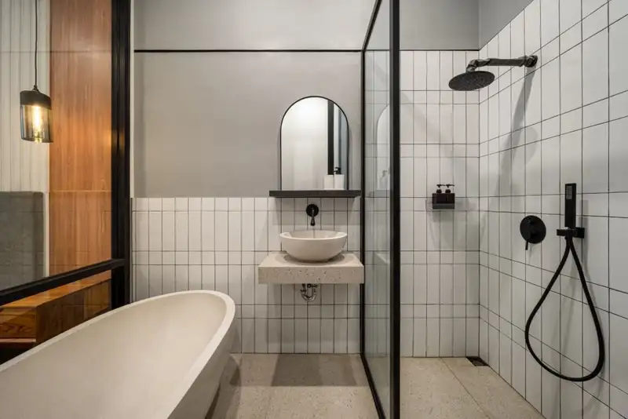

Daftar Isi
- Apa Saja Komponen Biaya Kamar Mandi?
- Faktor Apa yang Membuat Biaya Berbeda-beda?
- Bagaimana Cara Menyusun RAB?
- Bagaimana Menekan Biaya Tanpa Mengorbankan Standar?
- Cara Memilih Kontraktor Kamar Mandi Lantai 2
- Isi Kontrak dan Garansi yang Perlu Diperhatikan
- Kesalahan Perencanaan Biaya yang Perlu Dihindari
- FAQ
Biaya pembuatan kamar mandi lantai 2 dipengaruhi struktur, waterproofing, plumbing, material finishing, sanitary, dan upah, sehingga angkanya bervariasi dan sebaiknya dihitung lewat RAB terperinci.
- Biaya tidak dapat disamaratakan karena bergantung ukuran, material, kondisi bangunan, dan wilayah.
- Komponen utama meliputi struktur, waterproofing, plumbing, keramik, sanitary, listrik, plafon, dan upah.
- RAB terperinci membantu membandingkan penawaran dan mengendalikan anggaran.
- Prioritaskan anggaran pada waterproofing dan plumbing, bukan pada elemen dekoratif.
- Kontrak tertulis dengan masa pemeliharaan melindungi pemilik bila terjadi kebocoran.
Apa Saja Komponen Biaya Kamar Mandi Lantai 2?
Komponen biaya kamar mandi lantai 2 terdiri atas pekerjaan struktur, waterproofing, plumbing, pasangan keramik, sanitary, listrik, plafon, dan upah tukang, ditambah cadangan biaya tak terduga.
Berikut uraian komponen yang lazim masuk dalam anggaran:
- Struktur: pelat, turun lantai, bukaan pipa, dan penulangan tambahan.
- Waterproofing: material, tenaga kerja, dan uji genangan.
- Plumbing: pipa, fitting, floor drain, dan pengujian.
- Finishing: screed, keramik lantai dan dinding, perekat, dan nat.
- Sanitary: kloset, wastafel, kran, shower, dan aksesori.
- Kelistrikan dan penerangan: titik lampu, exhaust fan, dan proteksi.
- Plafon dan pintu: material tahan lembap.
- Upah dan pengawasan: tukang, mandor, dan pengawas.
Setiap item perlu dinilai secara terpisah agar pemilik tahu ke mana anggaran mengalir.
Faktor Apa yang Membuat Biaya Berbeda-beda?
Biaya kamar mandi lantai 2 berbeda-beda karena ukuran ruangan, kondisi struktur, kualitas material, kerumitan plumbing, lokasi proyek, akses material, dan tingkat pengawasan.
Ukuran ruangan memengaruhi volume pekerjaan. Kondisi struktur menentukan apakah pelat perlu diperkuat. Pada bangunan lama, pembongkaran dan penyesuaian pipa dapat menambah biaya dibandingkan bangunan baru.
Kualitas material memiliki rentang harga yang lebar, misalnya keramik dan sanitary. Kerumitan plumbing juga berpengaruh, terutama bila jalur pipa harus dibelokkan jauh menuju shaft.
Lokasi proyek memengaruhi ongkos angkut dan upah setempat. Akses jalan yang sempit dan lantai atas tanpa lift material menambah waktu kerja. Karena faktor-faktor ini, angka biaya dari daerah atau tahun lain tidak dapat langsung dijadikan patokan.
Bagaimana Cara Menyusun RAB Kamar Mandi Lantai 2?
RAB kamar mandi lantai 2 disusun dengan menghitung volume tiap pekerjaan, mengalikannya dengan harga satuan material dan upah, lalu menambahkan cadangan biaya tak terduga.
Langkah penyusunan yang lazim:
- Tentukan lingkup pekerjaan dan spesifikasi material.
- Hitung volume, misalnya luas lantai, luas dinding, panjang pipa, dan jumlah sanitary.
- Cari harga satuan material dan upah terbaru di wilayah proyek.
- Kalikan volume dengan harga satuan untuk tiap item.
- Jumlahkan seluruh item, lalu tambahkan cadangan biaya.
Sebagai ilustrasi volume, kamar mandi berukuran 2 x 2 meter memiliki luas lantai 4 m2. Dinding dengan keliling 8 meter dan tinggi keramik 2 meter memiliki luas sekitar 16 m2. Volume-volume seperti ini kemudian dikalikan harga satuan setempat.
Cadangan biaya tak terduga umumnya sekitar 5 sampai 10 persen dari total, terutama pada renovasi bangunan lama. Angka ini dapat disesuaikan dengan tingkat ketidakpastian proyek.
Bagaimana Menekan Biaya Tanpa Mengorbankan Standar?
Biaya kamar mandi lantai 2 dapat ditekan lewat desain sederhana, penempatan di atas area basah, material lokal berkualitas, dan prioritas pada waterproofing serta plumbing.
Penghematan yang aman dilakukan pada elemen yang tidak memengaruhi fungsi. Desain yang sederhana, ukuran keramik yang efisien, dan sanitary standar dapat menurunkan biaya tanpa merugikan kualitas.
Penempatan kamar mandi di atas area basah lantai 1 memperpendek jalur pipa. Material lokal berkualitas sering lebih hemat dari segi ongkos angkut dan ketersediaan suku cadang.
Sebaliknya, jangan menghemat pada waterproofing, pipa, dan pengujian. Biaya perbaikan kebocoran umumnya jauh lebih besar dibandingkan selisih biaya pekerjaan yang benar sejak awal, karena melibatkan pembongkaran dan perbaikan ruang di bawahnya.
Bagaimana Cara Memilih Kontraktor Kamar Mandi Lantai 2?
Kontraktor kamar mandi lantai 2 yang baik menunjukkan portofolio ruang basah, menjelaskan metode waterproofing, memberi RAB terperinci, bersedia diawasi, dan mencantumkan masa pemeliharaan tertulis.
Berikut kriteria yang dapat dinilai:
- Portofolio: pengalaman mengerjakan ruang basah dan bangunan bertingkat.
- Metode kerja: penjelasan jelas tentang waterproofing, uji genangan, dan uji pipa.
- RAB terperinci: rincian volume, harga satuan, dan spesifikasi material.
- Transparansi: bersedia menunjukkan dokumentasi dan dapat diawasi.
- Referensi: klien sebelumnya yang dapat dihubungi.
- Legalitas: identitas usaha dan kelengkapan dokumen yang jelas.
Bandingkan minimal beberapa penawaran dengan spesifikasi yang sama. Selisih harga yang besar sering menandakan perbedaan lingkup atau kualitas material, bukan sekadar efisiensi.
Apa Isi Kontrak dan Garansi yang Perlu Diperhatikan?
Kontrak sebaiknya memuat lingkup pekerjaan, spesifikasi material, jadwal, termin pembayaran, masa pemeliharaan, serta tanggung jawab perbaikan kebocoran atas pekerjaan kamar mandi lantai 2.
Kontrak tertulis melindungi kedua pihak. Lingkup dan spesifikasi harus jelas agar tidak terjadi perbedaan pemahaman. Termin pembayaran sebaiknya dikaitkan dengan progres pekerjaan, misalnya setelah uji genangan lulus.
UU No. 2 Tahun 2017 tentang Jasa Konstruksi mengatur tanggung jawab penyedia jasa atas kegagalan bangunan dalam jangka waktu paling lama 10 tahun sejak serah terima akhir layanan. Untuk pekerjaan skala kecil, masa pemeliharaan dan garansi tetap perlu disepakati secara spesifik dalam kontrak.
Pastikan garansi menyebut secara eksplisit cakupan kebocoran, lamanya, dan cara klaim. Simpan seluruh dokumen kontrak, foto pekerjaan, dan bukti pembayaran. Pemilik yang membutuhkan kepastian hukum dapat berkonsultasi dengan penasihat hukum atau konsultan konstruksi.
Apa Kesalahan Perencanaan Biaya yang Perlu Dihindari?
Kesalahan perencanaan biaya kamar mandi lantai 2 meliputi memilih penawaran termurah tanpa membandingkan spesifikasi, tanpa cadangan dana, mengurangi waterproofing, dan mengubah desain saat kerja.
Berikut penjelasan singkatnya:
- Memilih penawaran termurah semata. Spesifikasi yang lebih rendah sering tersembunyi di balik harga.
- Tidak menyiapkan cadangan dana. Temuan tak terduga saat pembongkaran memaksa anggaran membengkak.
- Mengurangi waterproofing dan pengujian. Biaya perbaikan kebocoran umumnya jauh lebih besar.
- Mengubah desain saat pekerjaan berjalan. Perubahan bukaan pipa atau sanitary memicu pekerjaan ulang.
- Tidak memeriksa lingkup penawaran. Item seperti pengujian atau pembuangan puing tidak tercantum.